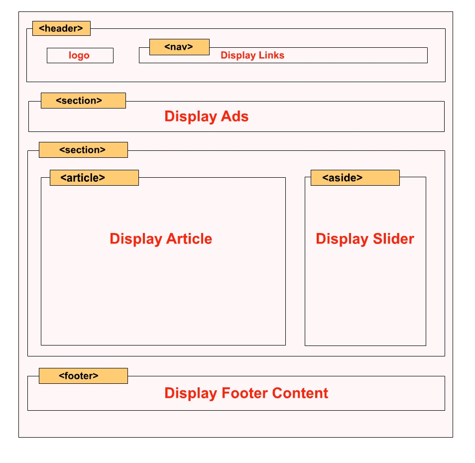
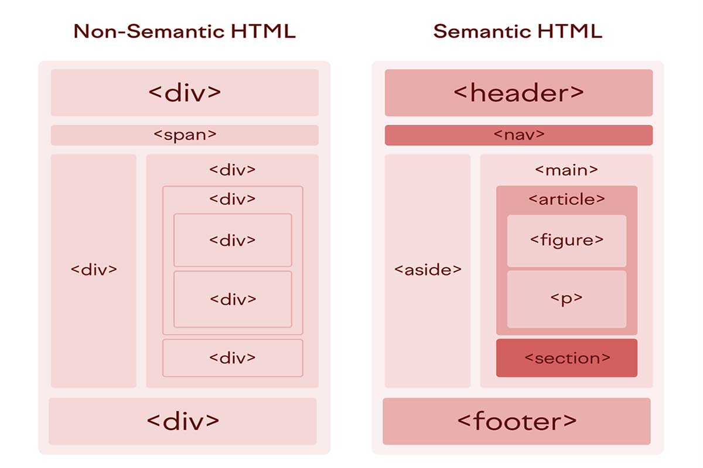

A website structure refers to how different parts of a webpage are organized and arranged in a proper layout. Every website usually has three main sections: header, main content area, and footer. The header contains the logo and navigation menu, the main section contains the primary content of the page, and the footer contains additional information like copyright or links. A proper website structure helps users easily navigate and understand the content. It also makes the website more organized, user-friendly, and visually balanced. Good structure is very important in web development because it improves readability and overall user experience.

Semantic HTML tags are those that clearly describe their meaning and purpose in a webpage, such as header, nav, main, section, article, and footer. These tags make the code more readable and help search engines understand the content better. On the other hand, non-semantic tags like div and span do not provide any meaning about the content; they are mainly used for styling and layout purposes. Semantic tags improve accessibility, SEO, and code organization, while non-semantic tags are used when no specific meaning is needed. Using semantic tags is considered a good practice in modern web development because it makes websites more structured and meaningful.